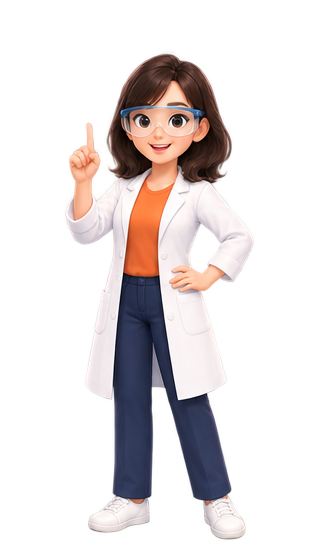

狹義的氧化還原與活性
燒東西，是失去了什麼，還是得到了什麼？親手做燃燒實驗，看懂氧化、氧化物的酸鹼與金屬活性。

先把兩份一模一樣的東西放上天平，燒掉其中一份看看。
⚖️ 燒燒看：天平會往哪邊倒？
天平兩邊放一模一樣的東西，先保持平衡。只點燃左盤，燒完之後，左盤會上升、下沉，還是不動？先猜，再點火。
📖 從燃素說到氧化理論
科學的進步來自於不斷的質疑與修正：
- 十七世紀「燃素說」： 認為可燃物中含有「燃素」，燃燒時燃素散失，所以物質燃燒後會變輕。
- 十八世紀的質疑： 科學家發現，許多金屬燃燒完之後，質量反而變重了！
- 拉瓦節的「氧化理論」： 十八世紀末，拉瓦節證實燃燒不是失去燃素，而是物質與空氣中的「氧氣」結合，形成氧化物。金屬燃燒後質量增加，正是因為結合了氧氣。
⚖️ 狹義的氧化與還原
在國中階段，我們從「氧原子的得失」來定義氧化還原反應：
氧化反應： 物質「得到氧」的化學變化。
(例如：鐵生鏽、碳燃燒)
還原反應： 物質「失去氧」的化學變化。
(例如：氧化銅被碳搶走氧，變回紅色的銅)
氧化與還原必然相伴發生，有人得到氧，就必定有人失去氧。
題目
為什麼拉瓦節說物體燃燒不是「失去燃素」？他觀察到了什麼關鍵現象？
提示
請回想一下，金屬（例如鐵或鎂）燃燒之後，它的總質量會變輕還是變重呢？
解答
因為他發現金屬燃燒後質量反而增加了！這證明了金屬不是散失物質，而是結合了空氣中的「氧氣」，這就是現代化學中的氧化反應。
戴上護目鏡，六種元素一個一個親手燒燒看！

鎂 (Mg) 的燃燒實驗
📓 我的實驗紀錄表
把試管依酸鹼排排看。
📝 實驗現象總整理
透過剛才的燃燒實驗室，我們整理出這 6 種元素的燃燒特徵：
| 元素 | 火焰特徵 | 水溶液指示劑 |
|---|---|---|
| Mg | 0.3秒極速爆燃強光 | 藍紫色 (鹼性) |
| Zn | 黃綠色 (表面保護膜) | 綠色 (中性, 難溶) |
| Cu | 不燃燒，表面變黑 | 綠色 (中性, 難溶) |
| S | 藍紫色，刺激氣味 | 紅色 (酸性) |
| P | 黃白色，大量白煙 | 黃紅色 (酸性) |
| C | 金黃色，無色無味 | 黃紅色 (酸性) |
🧪 試管排排站：酸鹼跟誰有關？
把六個廣口瓶裡的溶液各倒一些到試管裡，排在試管架上。先看亂排的樣子，再按「依酸鹼排列」。
🧪 氧化物的終極規律
1. 金屬氧化物若能溶於水，必定呈 鹼性。
2. 非金屬氧化物若能溶於水，必定呈 酸性。
* 註：部分金屬氧化物（如氧化鋅、氧化銅）極難溶於水，因此水溶液維持中性。
題目
燃燒一顆未知的黑色粉末，將燃燒產生的氣體收集並溶於水中。滴入廣用指示劑後，水溶液會呈現什麼顏色？
提示
黑色的粉末通常是碳（非金屬）。非金屬氧化物溶於水，會呈現酸性還是鹼性呢？
解答
黑色粉末為碳，碳燃燒產生二氧化碳。非金屬氧化物溶於水會產生微酸性的碳酸，因此廣用指示劑會呈現黃色或紅色 (酸性)。
金屬和氧結合的難易不一樣——越容易和氧結合，活性就越大。開啟時光機，看看不同金屬放久了會變成什麼樣子。
📈 什麼是金屬活性？
活性代表金屬「與氧結合的渴望程度」。
- 活性越大： 越容易發生氧化反應（如燃燒、生鏽），但其形成的氧化物越安定，極難被還原破壞。
- 活性越小： 不易與氧結合，化學性質極為安定，常以純元素狀態存在於自然界。
⏳ 金屬時光機：放久了會怎樣？
四塊剛切開、一樣大小的金屬，放在潮濕的空氣中。按下面的時間，快轉看看。
👑 金屬活性順序表
* 碳與氫為非金屬，但常作為比較基準放入表中。
題目
為什麼博物館裡常見商朝的「青銅器（銅）」與「黃金」飾品，卻很少見到明朝的「鐵器」？
提示
請對比「鐵 (Fe)」、「銅 (Cu)」與「金 (Au)」在金屬活性順序表中的相對位置。
解答
因為鐵的活性大於銅與金。活性越大的金屬越容易和空氣中的氧結合發生化學變化（生鏽），長期暴露在空氣中早就腐蝕殆盡了！而銅與金活性極小，性質十分安定。